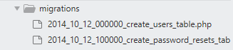

什么是数据库迁移?
在 Laravel 中, 我们使用数据库迁移来管理表结构, 迁移就像是数据库中的版本控制, 它让团队成员之间能够轻松地修改和共享应用程序的数据库结构, 而并不用担心并行更改数据结构造成的数据冲突. 同时,让 Laravel 项目的部署变得方便, 不仅如此, Migration 建表要比手动建表或者 .sql 文件具备额外的管理数据库的功能, 如: 回滚/重置/更新等, Migration 的建表方法大部分下能够兼容 MySQL, PostgreSQL, SQLite 甚至是 Oracle 等主流数据库系统.
总结下迁移的好处:
- 多人并行开发
- 代码版本管理
- 数据库版本控制 -- 如: 回滚/重置/更新呢
- 兼容多种数据库系统
- 部署方便
默认迁移文件
所有创建的迁移文件都被统一放在 database/migrations 文件夹里. 打开文件夹,我们可以看到 Laravel 已经默认为我们创建好了两个迁移文件:

从上面迁移文件的命名可以看出, Laravel 在创建迁移文件时会默认在生成的文件名前面加上一个当前的时间戳, 用于指明该文件的创建时间. 加上时间戳来命名迁移文件的好处在于, 当我们进行团队开发时, 如果有多个成员生成了相同名字的迁移文件, 也不会产生文件冲突的问题, 除非这几个成员在同一时刻生成了同一名称的迁移文件, 这种概率过低, 基本忽略不计.
Laravel 默认创建的两个迁移文件, 一个用于构建用户, 一个用于构建密码重置表. 密码重置的功能在后面接触, 我们先看用户迁移文件里面都有什么内容.
database/migrations/2014_10_12_000000_create_users_table.php
<?php
use Illuminate\Support\Facades\Schema;
use Illuminate\Database\Schema\Blueprint;
use Illuminate\Database\Migrations\Migration;
class CreateUsersTable extends Migration
{
/**
* Run the migrations.
*
* @return void
*/
public function up()
{
Schema::create('users', function (Blueprint $table) {
$table->increments('id');
$table->string('name');
$table->string('email')->unique();
$table->string('password', 60);
$table->rememberToken();
$table->timestamps();
});
}
/**
* Reverse the migrations.
*
* @return void
*/
public function down()
{
Schema::dropIfExists('users');
}
}
可以看到在该文件里面定义了一个 CreateUsersTable 类, 并且继承自 Migration 基类,.
其中有两个方法 up 和 down
- 当我们运行迁移时, up 方法会被调用
- 当我们回滚迁移时, down 方法会被调用
创建数据库
在 up 方法里面, 我们通过调用 Schema 类的 create 方法来创建 users 类
Schema::create('users', function (Blueprint $table) {
...
});
create 方法会接受两个参数, 一个是数据表的名称, 另一个是接收 $table (Blueprint 实例) 的闭包.
定义数据表字段
CreateUsersTable 类中通过 Blueprint 的实例 $table 为 users 表创建所需的数据库字段.下面来看 Blueprint 实例 $table 的基本用法:
$table -> increaments('id');
由 increments 方法创建了一个 integer 类型的自增长 id
$table -> string('name');
由 string 方法创建来了一个 name 字段, 用于保存用户名称.
$table -> string('email')->unique();
由 string 方法创建一个 email 字段, 且在最后指定该字段的值为唯一值, 用于保存用户邮箱.
$table -> string('password', 60);
由 string 方法创建一个 password 字段, 且指定最大长度为60, 用于保存用户密码.
$table -> timestamps();
由 timestamps 方法创建一个 create_at 和一个 update_at 字段, 分别用于保存用户的创建时间和更新时间.

回滚迁移
down 方法会在回滚命令发起时被调用, 是 up 方法的逆向操作, 在上面的代码中, up 创建了 users 表, 那么这里将会通过调用 Schema 的 drop 方法来删除 users 表.
Schema::dropIFExists('users');